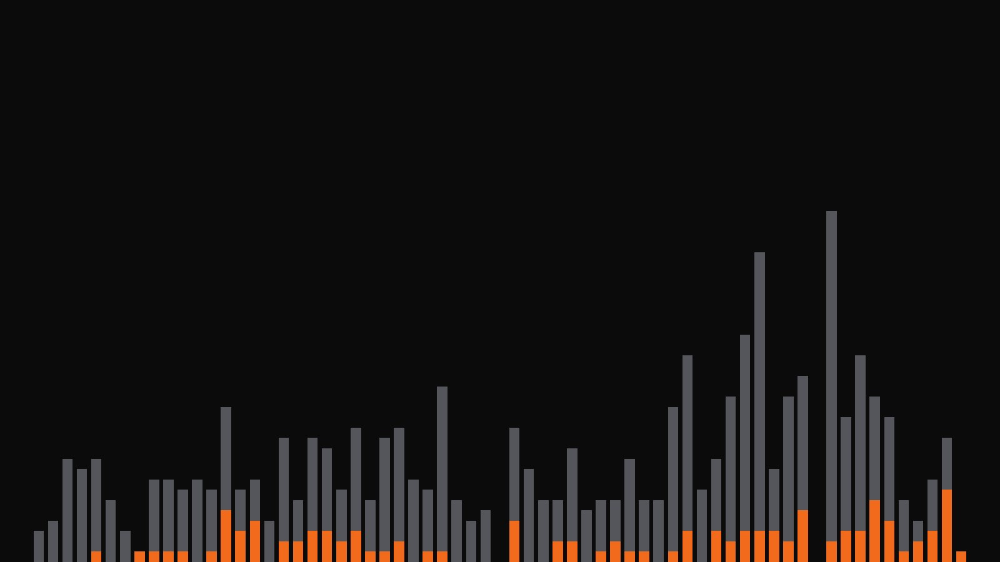
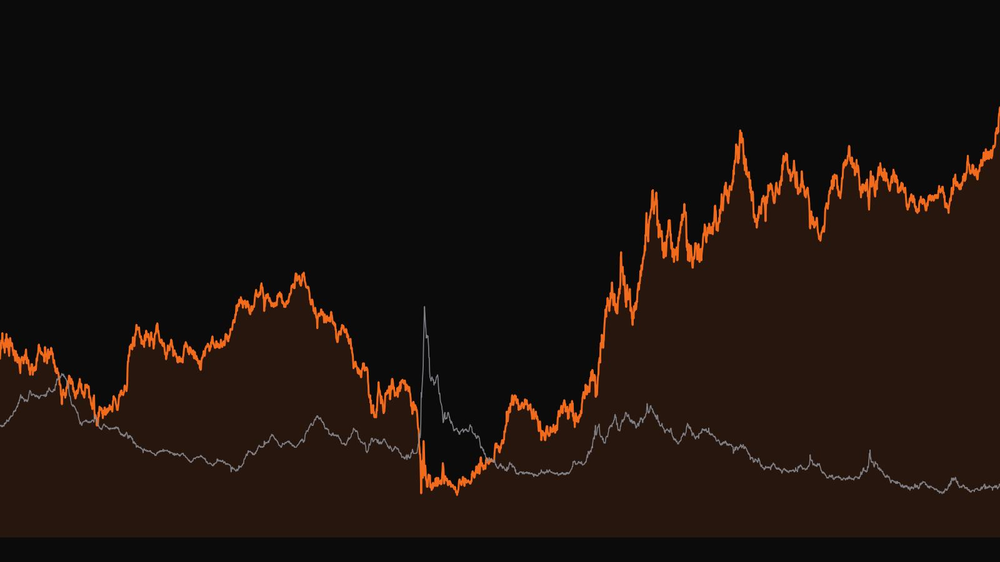
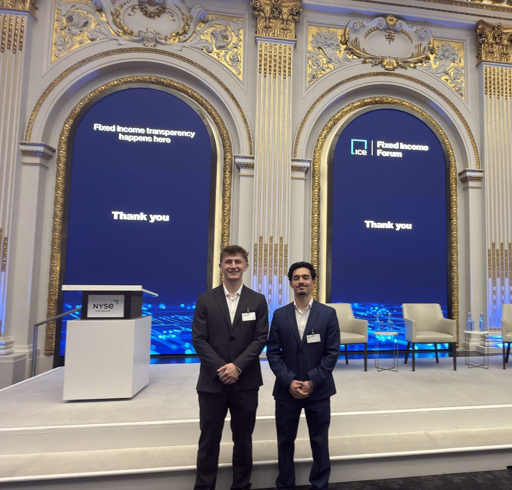
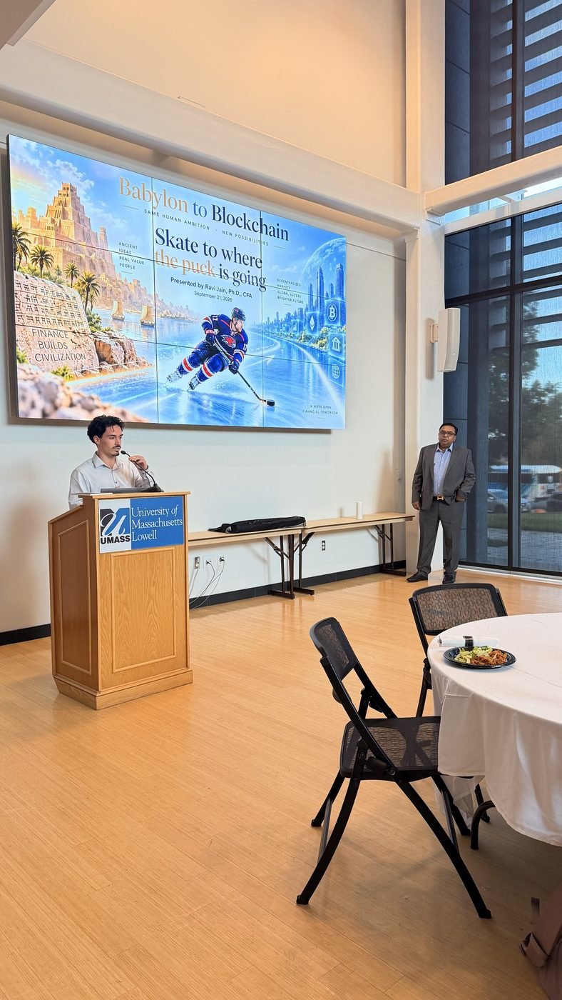
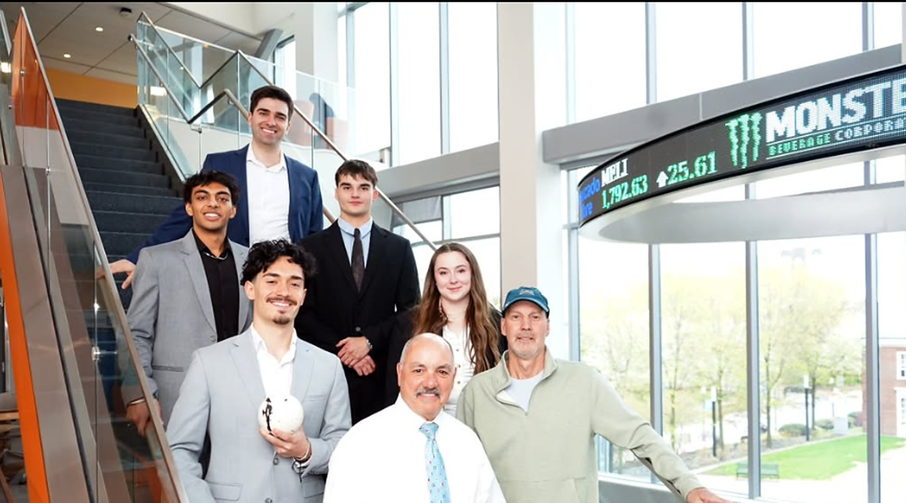
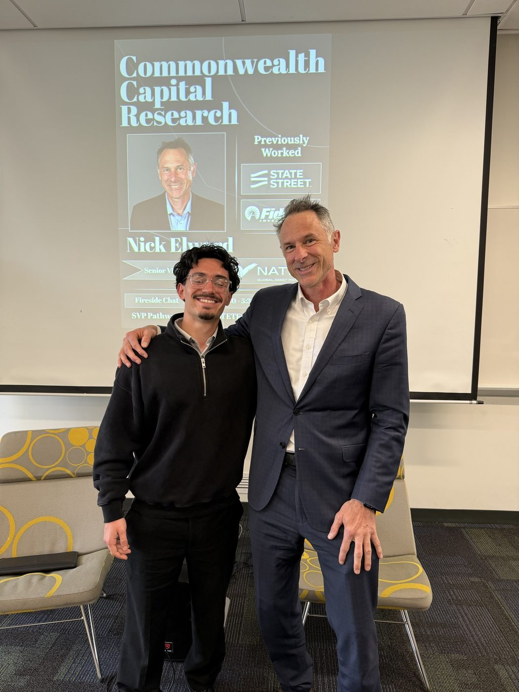
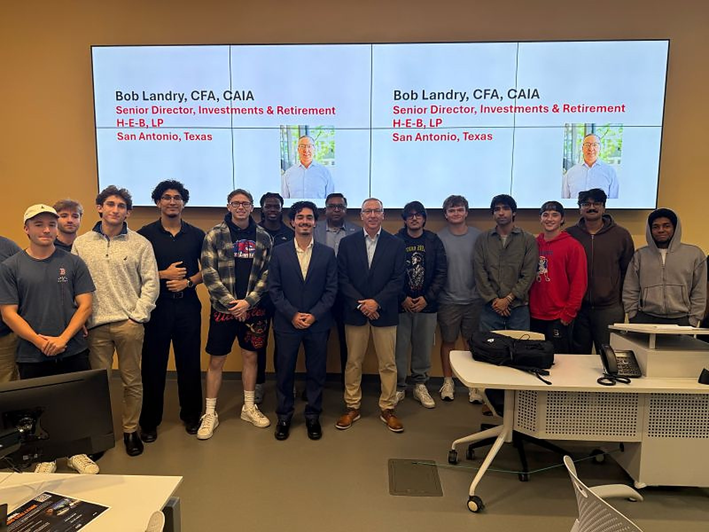

Anthony Ferriero.
I am seeking a 2027 analyst position in fixed income, in credit research, syndicate or debt capital markets.
I spent nine months on a primary bond desk at Finsight, where I collected order books on 15 to 20 deals a day. Since then I have built five DCF models with a credit comparison, a green bond pricing study, a tender offer tracker and a score for the new issue window. Each project sets out its assumptions and its limitations.

Manning School of Business, class of 2027
I am a senior at UMass Lowell studying finance and marketing, with a minor in quantitative economics. My GPA is 3.6.
From December 2025 to September 2026 I was a debt capital markets analyst intern at Finsight, where I collected order book updates on 15 to 20 new bond deals a day. I now train students on the Bloomberg Terminal, lead the Finance Society and conduct research on green bond pricing. I also write the rates and credit section of a student research newsletter.
At Finsight, and on my own
At Finsight I covered order books and allocations, the move from price talk to final pricing, volume against Street estimates, attrition and new issue concession. I also wrote headlines on 25 or more liability management deals.
Independently, I built five DCF models and a credit comparison of the media companies, a study of whether green bonds price tighter at issue, a daily tracker of tender and exchange offers drawn from SEC filings and newswires, and a score for whether the new issue window is open.
- Skydance net leverage in my DCFthe thinnest equity cushion of the five credits I modeled6.9x
- New issue discount I measured on green bonds153 matched pairs with a p value of 0.30, so not statistically significant2.4 bps
- Green bonds in my datasetcleaned from 1,226 tracker rows, 40 countries663
- New bond deals a day I collected order books onfrom 30+ IG and HY syndicate desks at Finsight15 to 20
- Liability management deals I wrote headlines fortenders, exchanges and consents25+
- Tender Tracker offer types and dates read correctlyon filings the rules had never seen9 in 10
I like working out why a bond prices where it does.
The answer depends on leverage, coverage, the equity beneath the bonds and where comparable paper has priced, and the market tests that answer quickly.
How the work applies across four desks
- Fixed income
- A study of whether green bonds price tighter than conventional bonds from the same issuer, together with the rates section of a research newsletter. Green bond pricing · Commonwealth Capital Research
- Credit research
- Five media companies valued on one template and compared on leverage, coverage and the equity cushion beneath the bonds. Media DCF models and credit comps · Skydance
- Syndicate
- Nine months spent collecting order books from 30 or more desks on 15 to 20 deals a day, and a daily score for whether the new issue window is open. Finsight · Morning Market Dashboard
- Debt capital markets
- Coverage of new issues from initial talk to final pricing, headlines on 25 or more liability management deals, and a tracker of bond tender and exchange offers. Finsight · Tender Tracker
Projects, roles and results
Roles
- FinsightI covered order books, pricing from initial talk to final terms, volume against estimates and liability management on 15 to 20 new deals a day, from December 2025 to September 2026.25+liability management deals for which I wrote the headlines
- Commonwealth Capital ResearchI have written the rates and credit section of a newsletter for 200 subscribers since February 2024.
- Bloomberg at UMass LowellI train students across 10 classes as a Terminal Assistant and captain the UML team in the Bloomberg Global Trading Challenge.$1Mvirtual book, long only, scored against the WLS index
Projects
 Media DCF models and credit compsFive media companies valued on a single template and then compared as credits on leverage, coverage, equity cushion and spread.6.9xSkydance net leverage, against a 3.0x target that cash flow alone does not reach
Media DCF models and credit compsFive media companies valued on a single template and then compared as credits on leverage, coverage, equity cushion and spread.6.9xSkydance net leverage, against a 3.0x target that cash flow alone does not reach Green bond pricingA study of whether green bonds price tighter at new issue than conventional bonds from the same issuer, based on 153 matched pairs.2.4 bpsaverage gap at new issue, which is not statistically significant
Green bond pricingA study of whether green bonds price tighter at new issue than conventional bonds from the same issuer, based on 153 matched pairs.2.4 bpsaverage gap at new issue, which is not statistically significant
Tender TrackerA daily tracker of bond tender and exchange offers that reads SEC filings and newswires and records the terms and caps of each offer.9 in 10offer types and dates read correctly on filings the rules had not seen
Morning Market DashboardA daily score for whether the new issue window is open, built from the inputs a syndicate desk reviews before a launch.6 inputsVIX, MOVE, IG and HY spreads, futures, spread range Fed Liquidity LabA test of whether the Fed's net liquidity is a useful signal for reducing risk, run on public data against buy and hold.6.0%a year for the rules, against 8.1% for buy and hold
Fed Liquidity LabA test of whether the Fed's net liquidity is a useful signal for reducing risk, run on public data against buy and hold.6.0%a year for the rules, against 8.1% for buy and hold- Mill City ConsultingResearch and due diligence for a duckpin bowling alley that has operated since 1931.
Competitions

Leadership
- UML Finance SocietyI am president of a student finance club with 500 members.
- Intercollegiate Sales TeamI captain a team that placed in the top four at a national competition.
Education and skills

The Finance Society now has 500 members.
That is 200 more than when I became president in April 2026.
- 500+members
- 9person e-board
- 6events in six weeks
Recent events

On stage at the NYSE after the ICE Fixed Income Forum, October 21, 2026. The Finance Society on the roof of the Boston Fed, Boston Fintech Week.
The Finance Society on the roof of the Boston Fed, Boston Fintech Week.
Opening From Gold to Tokens with Professor Ravi Jain, September 21. Fourth in Speed Sell at the Challenger Sales Institute invitational.
Fourth in Speed Sell at the Challenger Sales Institute invitational.
The Mill City Consulting team.
With Nick Elward of Natixis after the CCR fireside chat. The Finance Society table at the involvement fair.
The Finance Society table at the involvement fair. Crack the Fintech Career Code, the student panel at the Boston Fed.
Crack the Fintech Career Code, the student panel at the Boston Fed. The Finance Society at an event by the water.
The Finance Society at an event by the water. Members at a Finance Society event.
Members at a Finance Society event.
A guest speaker session with Bob Landry of H-E-B. At a Finance Society event.
At a Finance Society event. Resume Recharge.
Resume Recharge.
Experience, most recent first
- Nov 2026Fed Liquidity Lab
A weekly tracker of the Fed's balance sheet, inflation and output, with trading rules tested against buy and hold. The rules underperformed, and I published the result as it came out.
- Oct 2026Media DCF models and credit comps
DCF models of Skydance, Netflix, Disney, Comcast and Fox built on one template from SEC filings, followed by a credit comparison covering leverage, coverage, equity cushion, spreads and Skydance's path to its 3.0 times leverage target.
- Oct 2026 to nowTender Tracker
A daily tracker of bond tender and exchange offers built from SEC filings and newswires, with its error rates published.
- Oct 2026 to nowCaptain, Bloomberg Global Trading Challenge
I captain the UML team in the fall 2026 round. Each team manages one million virtual dollars in a long only book that is scored against the WLS index. Our book opened on October 12.
- Sep 2026 to nowBloomberg Terminal Assistant, UMass Lowell
I train students across 10 classes and pull data for faculty research.
- Sep to Oct 20262026 Valuation Challenge
I built the discount rate, DCF, LBO and public comparables for a Gulf Coast contractor with $132MM of revenue. The team submitted on October 19.
- Jun 2026 to nowMorning Market Dashboard
A dashboard built in R that scores whether the new issue window is open. The public version runs on free data.
- May 2026 to nowFixed Income Research Analyst, UMass Lowell
Research on green bond pricing with a faculty supervisor. The preliminary results are published on this site.
- Apr 2026 to nowPresident, UML Finance Society
Membership has grown by 200+ to over 500, and the club has run six or more events and trips this year.
- Feb to Apr 2026Bloomberg Global Trading Challenge, spring round
I was an analyst on the UML team, working on research, position sizing and execution in the terminal.
- Dec 2025 to Sep 2026Debt Capital Markets Analyst Intern, Finsight
I covered new issuance, pricing and spreads, along with 25+ liability management deals. I worked on high yield in the spring and investment grade in the summer.
- Nov 2025 to nowCaptain, UML Intercollegiate Sales Team
The team placed in the top four at the Love's Travel Stops national sales competition.
- Feb 2024 to nowResearch Analyst, Commonwealth Capital Research
I write the rates and credit section of a newsletter for 200 subscribers and co-wrote a report on the SpaceX IPO.